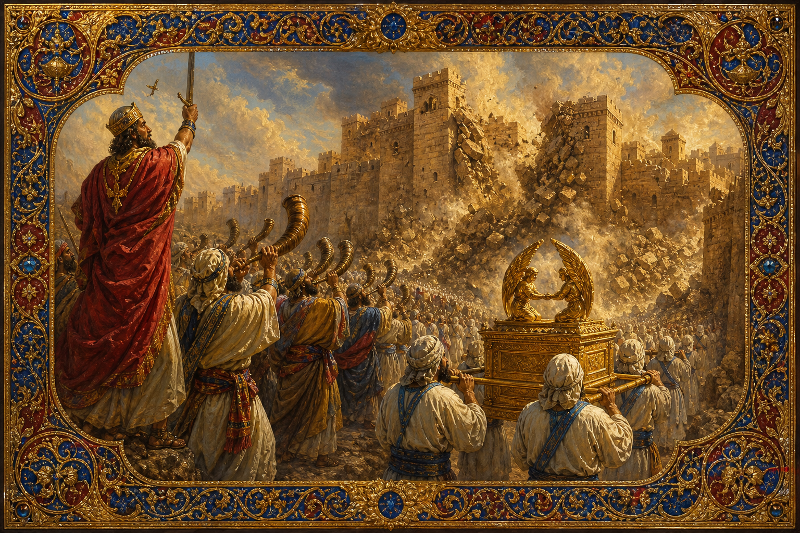

Old Testament · Book 6 of 39
Joshua
The wilderness ends at a river. On the other side is a land of promise, and a long, hard work of taking hold of it.
Moses is dead. Joshua, his assistant for forty years, now stands where Moses once stood, looking at the same river his mentor was never allowed to cross.
Have not I commanded thee? Be strong and of a good courage; be not afraid, neither be thou dismayed: for the LORD thy God is with thee whithersoever thou goest.
What happens in Joshua
The book opens with God's charge to Joshua to be strong and courageous, then follows Israel as the Jordan River parts for them to cross into Canaan much as the Red Sea once did for their parents. Spies scout Jericho and are sheltered by Rahab, a woman of the city who chooses to trust Israel's God over her own people's gods. The city's walls fall after seven days of marching and a final shout, not by any weapon Israel carries. A setback at Ai follows, tracing the consequences when one man's hidden disobedience affects the whole camp, and the army returns humbled before trying again. Campaign after campaign secures the land to the south and north, and the book closes with the territory divided among the twelve tribes and the elderly Joshua calling the people together one last time at Shechem to renew their covenant with God, closing with his own well-known declaration of loyalty: \"As for me and my house, we will serve the LORD.\"
Why it matters
Joshua is the hinge between promise and possession. For centuries God had told Abraham's descendants that this land would be theirs; Joshua is the record of that promise finally becoming a lived reality, won through obedience rather than military strength alone. The repeated instruction to Joshua — be strong, be courageous, do not be afraid — is not a call to self-reliance but a reminder that the outcome depends on God's presence, not Joshua's skill. Rahab's inclusion, a Canaanite woman grafted into Israel's story through faith, previews a theme that runs the length of Scripture: God's mercy was never meant to stop at one bloodline. And Joshua's closing challenge to choose whom to serve remains one of the most quoted calls to decision in the entire Bible, a reminder that inheriting a promise and actually living inside it are two different things, both requiring a daily choice.
Jump to a chapter
Joshua has 24 chapters — select one to begin reading there.